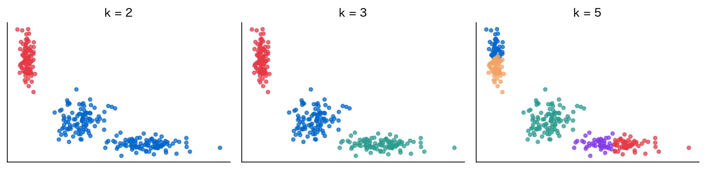
第13回 モデル選択
k は目的関数では決まらない——当てはめの外に基準を置く
場面：「3でいいんですか？」
どれも「それらしく」見える。 3を選んだ根拠を、数値で言えるだろうか。
今回の問い
第12回は「WCSS を最小にする分け方」を求めた。
- だが k そのものは、こちらが外から与えていた
- k も「WCSS 最小」で決めればよいのでは？
- 実はそれができない。今日はその理由から始める
→ 当てはめの良さでは複雑さは決まらない。
データの四角形：グループの数を選ぶ
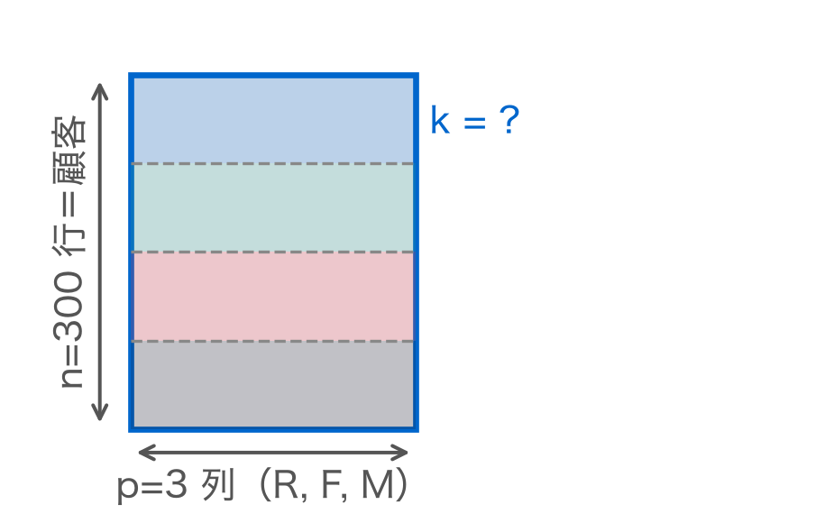
第12回は線の引き方を求めた。今回は線を何本引くかを決める。
位置づけ：分け方から個数へ
同じデータ、同じ手法。問いだけが一段外に出る。
| 第12回 | 第13回（今回） | |
|---|---|---|
| 与えるもの | k | なし |
| 求めるもの | 分け方 C_1,\dots,C_k | k |
| 基準 | WCSS の最小化 | WCSS では決まらない |
k はパラメータではなく複雑さである。
素朴な方法：WCSS を最小にする k
第12回の目的関数をそのまま使えばよさそうである。
\text{WCSS}(k) = \sum_{j=1}^{k}\sum_{i \in C_j} \lVert \mathbf{x}_i - \boldsymbol{\mu}_j \rVert^2
読み方：クラスタごとに中心からの距離の二乗を全員ぶん足し、それを全クラスタで合計する。
これを最小にする k を選べばよいはずである。
デモ：k を動かして WCSS を描く
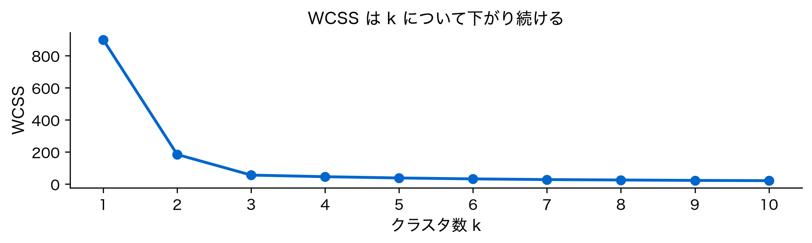
一度も上がらない。最小を探せば、いちばん右が選ばれる。
素朴な限界：k=n で 0 になる
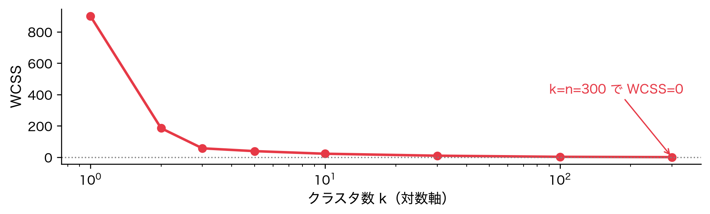
中心は自分自身、距離はゼロ。「最適」な分け方とは、誰とも一緒にしないこと。
なぜ単調に減るのか
証明は置かない。一行で分かる理由がある。
- k 個の最適解は、k+1 個でも実現できる
- どれか一つのクラスタを二つに割るだけでよい
- 割れば WCSS は減るか同じ。増えない
つまり k+1 の最小値は k の最小値以下。
定規を細かく刻むほど長さは短くなる。
［縦の糸］この構造を3回見た
初めてではない。繰り返し現れてきた構造である。
| 回 | 複雑さを増やすと | 外側に置いた基準 |
|---|---|---|
| 第2回 | 訓練誤差が下がる | テスト誤差 |
| 第4回 | R^2 が上がる | \mathrm{tr}\,\mathbf{H}=p |
| 第10回 | 再構成誤差が下がる | 累積寄与率 |
| 第13回 | WCSS が下がる | 今日これを考える |
第2回の「訓練誤差は単調に下がる」と同じ文である。
帰結：外に基準が要る
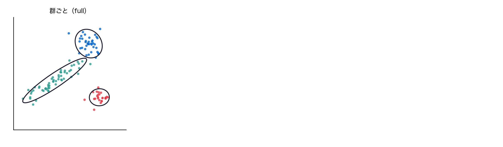
当てはめだけなら端が選ばれる。逆向きの力を足して初めて内側に最小ができる。
定義①：エルボー法
最も素朴な基準。減り方が変わる点を目印にする。
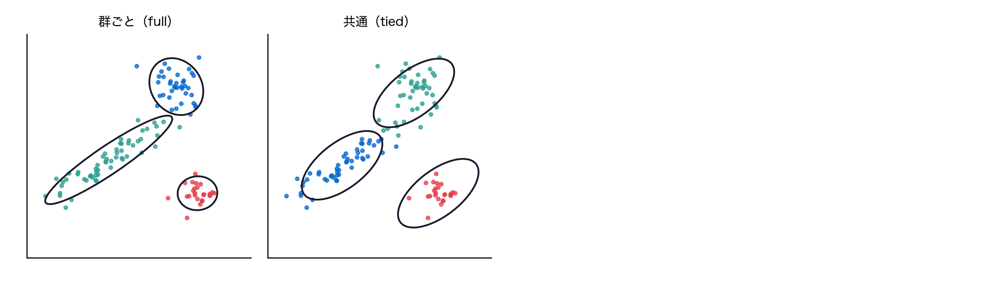
外に置いたのは減り方の変化そのもの。だが目で見ても一つに定まらない。
デモ：折れ目を数値で見る
減り幅の差（二階差分）が最大の k を拾ってみる。
最大の k = 2 ／ 折れ: [586.8 118.4]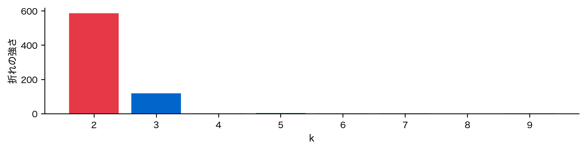
機械的には k=2。k=1→2 の落差に 3 が埋もれた。
定義②：Gap統計
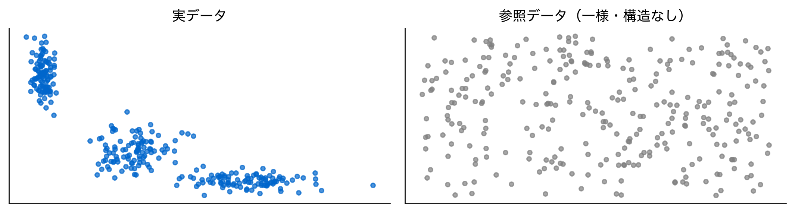
同じ範囲に一様に散らばらせたものが帰無モデル。これと比べる。
Gap統計の式
参照データでも WCSS は下がる。その差を見る。
\text{Gap}(k) = \mathbb{E}^{*}\!\left[\log W_k^{*}\right] - \log W_k
読み方：構造のないデータの log WCSS の平均から、実データの log WCSS を引く。どれだけ余計に下がったかを表す。
大きいほど構造がある。外に置いたのは帰無モデル。
デモ：Gap は頭打ちになる
Gap: [0.05 1.24 2.19 2.18 2.19 2.18 2.19 2.17 2.19 2.18]
argmax = 9 ／ 規則 = 3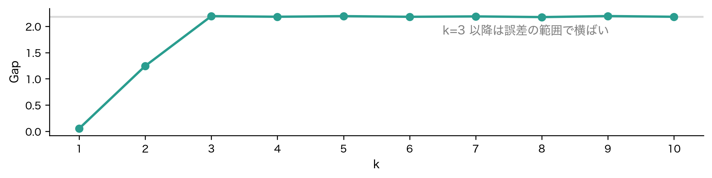
最大値は k=9。だが 3 以降の差は誤差より小さい。argmax は意味を持たない。
Gap の正式な選択規則
Gap統計には argmax ではない規則がある。
- 参照データの散らばりから標準誤差 s_k を出す
- \text{Gap}(k) \ge \text{Gap}(k+1) - s_{k+1} を満たす最小の k を選ぶ
- 「次が誤差の範囲でしか良くならないなら止める」
これを当てると k=3。頭打ちの入口を拾う。
統計量だけでは足りない。使い方の規則まで含めて基準になる。
定義③：シルエット係数
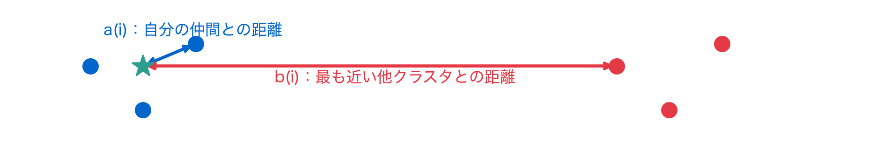
s(i) = \frac{b(i) - a(i)}{\max\{a(i),\, b(i)\}}
読み方：他クラスタとの距離から仲間との距離を引き、大きいほうで割る。1に近いほどよく分離。
デモ：シルエットは同点になる
k=2: 0.709 k=3: 0.707 差: 0.0023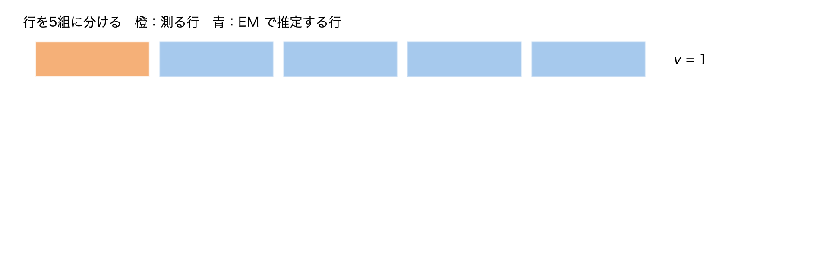
WCSS と違い k を増やしても良くならない。最大は左端の k=2、k=3 との差は 0.002 で実質同点。
定義④：安定性
四つめ。同じ答えが再現するかを基準にする。
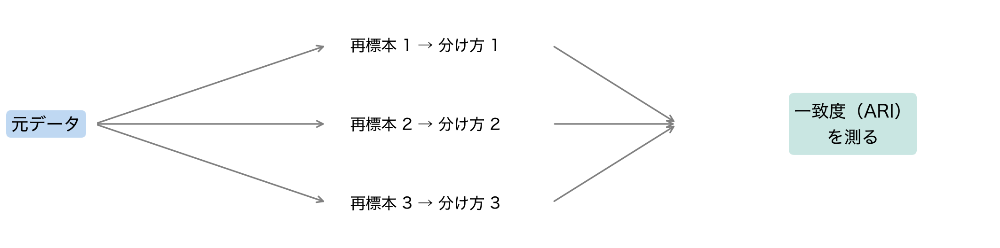
外に置いたのは再現性。第11回の t-SNE で「毎回違う絵が出る」と言った論点と同じ。
デモ：4つの基準を同じデータに
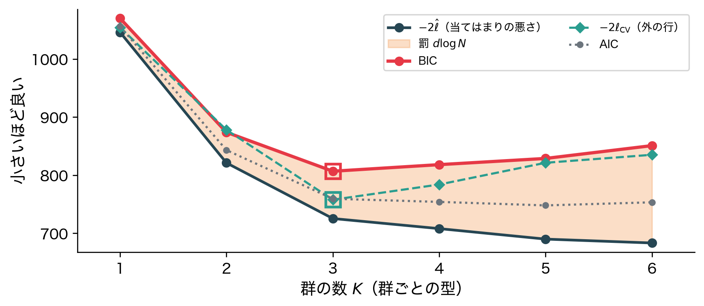
| 基準 | argmax | 曲線を見ると |
|---|---|---|
| エルボー | 2 | 2 と 3 が候補 |
| Gap | 9 | 規則なら 3 |
| シルエット | 2 | 3 と同点（0.002差） |
| 安定性 | 2 | 2 と 3 が同点 |
4つを並べる：外に何を置いたか
食い違いは失敗ではない。測るものが違うだけ。
| 基準 | 外側に置いたもの | 性格 |
|---|---|---|
| エルボー | 減り方の変化 | 目安 |
| Gap | 帰無モデル | 統計的推論 |
| シルエット | 別の目的関数 | 差し替え |
| 安定性 | 再現性 | 頑健性 |
物差しが4本なら答えも4つ。一致するほうが不思議。
argmax を機械的に取らない
4つとも同じ穴を踏んだ。最大値を自動で拾うと壊れる。
- エルボー：最初の巨大な落差が折れ目を埋めた
- Gap：頭打ちの区間で誤差より小さい差を拾った
- シルエット：0.709 と 0.707 を勝敗にした
- 安定性：同点の 2 と 3 で小さいほうが出た
曲線の形と誤差の幅を見る。 関数はそこまで面倒を見ない。
［再訪］第10回の肘と同じ問題
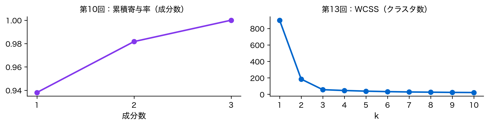
第10回で「肘（エルボー）」という言葉をすでに使った。同じ道具である。 主成分をいくつ残すかと、クラスタをいくつ作るかは、同じ形の問題だった。
［再訪］第2回の交差検証と同じ構造
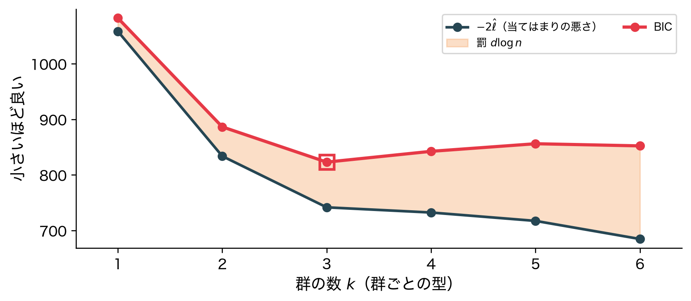
左は外側にテスト誤差を置いてU字を作った。右も同じことをしている。
共通の型：当てはめ＋罰
第2・4・6・10回と今回を、一つの形にまとめられる。
\text{選択基準} = \text{当てはめの悪さ} + \text{複雑さの罰}
読み方：選択基準は、データに合っていない度合いと複雑さへの罰の和。前者だけでは端が選ばれる。
前の項だけなら単調。後ろの項で内側に最小ができる。
情報量規準という考え方
この型には名前がついている。情報量規準という。
- AIC（赤池情報量規準）：当てはめ ＋ 変数の数への罰
- BIC：同じ形。罰の重みが標本数とともに増える
- どちらも「当てはめ＋罰」の同じ型である
式は覚えなくてよい。 新しい考え方ではなく、 すでに見てきた型に名前がついただけである。
［再訪］第6回の正則化も同じ形
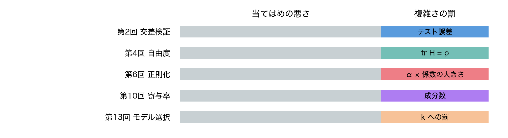
第6回は「OLSの目的に係数の大きさへの罰を足す」と書いた。同じ型である。
教師なしは正解がない
ただし今回は、第2回や第6回より難しい条件にある。
- 教師あり：テスト誤差という外部の正解がある
- 教師なし：何が良い分け方かを自分で定義する
- だから基準が4つも並び、しかも食い違う
唯一の正解がないのは欠陥ではない。 問題の性質である。
デモ：安定性を測る
k ごとに再標本を30回とり、一致度（ARI）を見る。
{2: 1.0, 3: 1.0, 4: 0.906, 5: 0.869, 6: 0.814}
位置だけでなく幅も見る。 ばらつく k は報告に耐えない。
［再訪］名前をつけて初めて使える
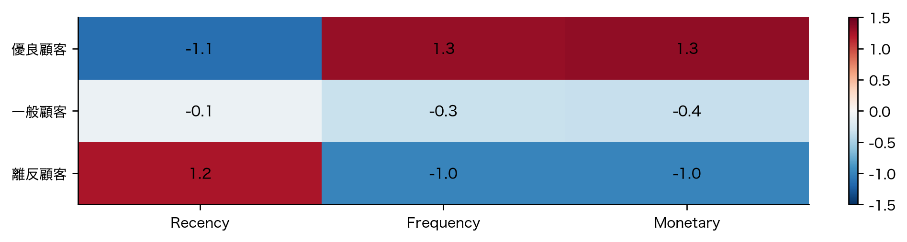
指標が選んだ k は番号の集合にすぎない。名前がついて初めて意思決定に使える。
3つの顧客層に名前がついた——ただ、この結論には落とし穴があるかもしれない。
落とし穴：唯一の正解はない
今日いちばん持ち帰ってほしい注意点。
- 「最適な k」と言わない。 何を基準にした最適かを添える
- 都合のよい指標だけを報告しない
- k を決めてから基準を選ぶのは後付けである
- 業務上の制約は正当な外部基準である
指標は道具、決めるのは人間。 根拠は説明できること。
実務：何を報告すべきか
k の選択は、結果ではなく過程を書くもの。
- 試した k の範囲と、使った基準をすべて
- 基準どうしが食い違ったなら、食い違ったと書く
- 安定性の結果（ARI の中央値とばらつき）
- k を決めた理由（統計的根拠か業務上の制約か）
- 各クラスタのプロファイルと命名
再現できる記述なら、k が何であれ議論できる。
手法×基準 早見表
| 基準 | 外に置いたもの | 選び方 |
|---|---|---|
| エルボー | 減り方の変化 | 折れ目を見る |
| Gap | 帰無モデル | 頭打ちの入口 |
| シルエット | 分離度 | 平均が高い範囲 |
| 安定性 | 再現性 | ARI が高い k |
| 情報量規準 | 複雑さの罰 | 規準が最小 |
「外に置いたもの」の列が、この回の答えである。
モデル選択が教えた3つ
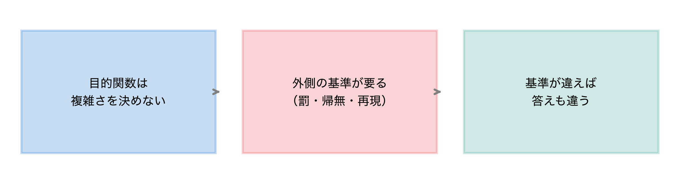
第2回から続いてきた糸が、ここで一本につながる。
まとめ（3点）
WCSS は単調減少する。 目的関数の最小化では k は決まらない。 第2回の訓練誤差、第10回の再構成誤差と同じ構造である
外側に基準を置くしかない。 置いたものが違えば答えも違う。 しかもどれも argmax を機械的に取ると壊れる
「当てはめの悪さ＋複雑さの罰」がこの講義を貫く型である。 交差検証も正則化も情報量規準も、この型の別の姿である
次回予告
第14回：コレスポンデンス分析——分割表を地図にする
- ここまで扱ってきたのは数値の行列だった
- 次はカテゴリ×カテゴリの度数表を扱う
- 行と列を同じ平面に置き、どれとどれが近いかを見る
- 道具は第11回の SVD。分解する対象が変わるだけ
「四角形を分解する」という見方が、また別の形で戻ってくる。